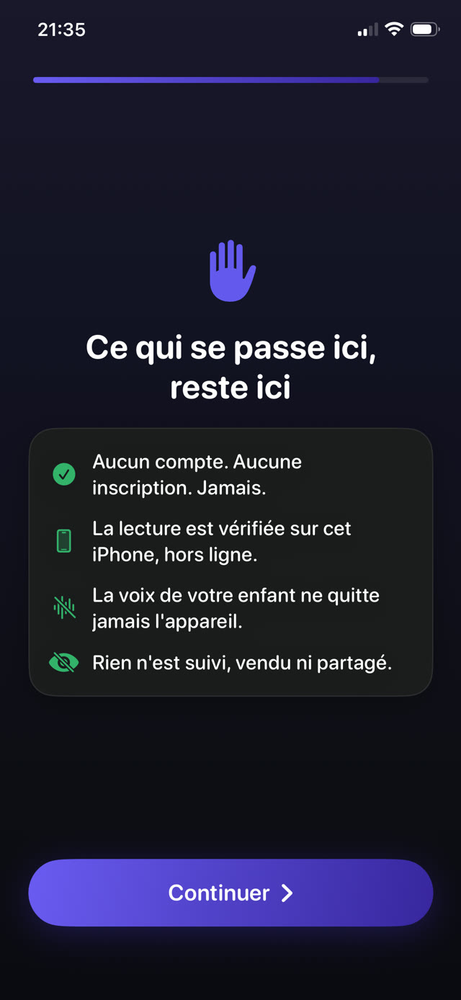

Comprendre le mode de défaillance est plus utile qu'une nouvelle liste d'heures recommandées.


Pourquoi les règles s'effondrent
- Elles exigent un adulte présent. Toute règle qu'on fait respecter en surveillant meurt le premier soir où vous cuisinez, travaillez ou sortez.
- Elles sont négociables. Un recours accepté apprend à votre enfant que la règle est une offre de départ, et chaque soirée devient une nouvelle négociation.
- Elles punissent sans proposer d'alternative. Confisquer le téléphone laisse un enfant qui s'ennuie et aucun plan, c'est-à-dire l'état dans lequel on invente les contournements.
- Elles sont trop ambitieuses. Une règle qui échoue un mardi ordinaire n'est pas une règle, c'est une aspiration, et les enfants font la différence immédiatement.
Les trois propriétés des règles qui survivent
- Automatique. Elle doit tourner que vous soyez dans la pièce ou non, réveillé ou non, d'humeur à batailler ou non.
- Constante. La même règle demain, et mardi prochain. La stabilité, c'est ce qui la rend impersonnelle.
- Gagnable. Il doit exister un moyen pour votre enfant d'obtenir ce qu'il veut en faisant quelque chose de raisonnable. Une règle sans passage est juste un mur à escalader.
Des règles types par âge
Ce sont des points de départ, pas des prescriptions. Ajustez après une semaine d'observation :
- 4 à 6 ans : une page lue à voix haute débloque 15 minutes. Pas d'écran dans l'heure avant le coucher.
- 7 à 9 ans : deux pages débloquent 30 minutes. Les appareils se rechargent hors de la chambre la nuit.
- 10 à 12 ans : trois pages débloquent 30 à 45 minutes. Les devoirs d'abord, les soirs d'école.
- 13 ans et plus : quatre pages débloquent 45 minutes, négociées avec eux plutôt qu'imposées. À cet âge, l'adhésion vaut plus que le contrôle.
Faire respecter sans surveiller
L'objectif est de vous retirer complètement de la boucle de contrôle. Non pas parce que la supervision est mauvaise, mais parce que votre crédibilité est une ressource limitée et la dépenser dans une dispute nocturne sur un minuteur en est un mauvais usage.
Quand la règle est appliquée par l'appareil, les désaccords cessent de porter sur vous. Vous devenez la personne qui lit avec eux, plutôt que celle qui prend le téléphone.
Une règle que le téléphone fait respecter
Guardian Reader est faite pour satisfaire les trois propriétés. Elle tourne toute seule via le système Temps d'écran d'Apple, applique la même règle chaque jour, et laisse toujours un passage : lire une page à voix haute, gagner les minutes.
Quand le temps est écoulé, les apps se reverrouillent d'elles-mêmes, et les réglages restent derrière un code parental pour que la règle ne puisse pas être modifiée par celui à qui elle s'applique.
La lecture débloque l'écran.
Gratuit · Sans compte, sans suivi
Télécharger Guardian Reader pour iPhone